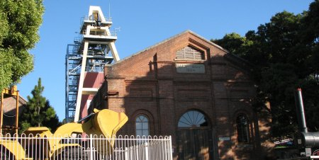
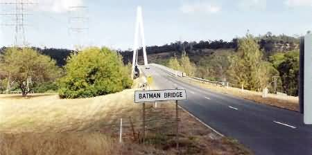
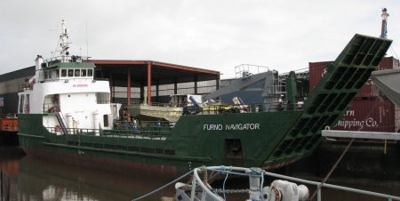
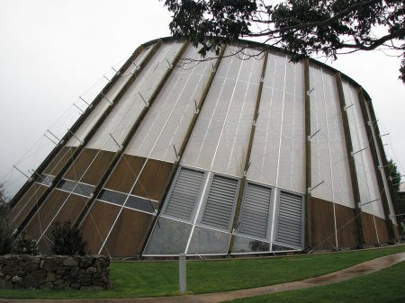
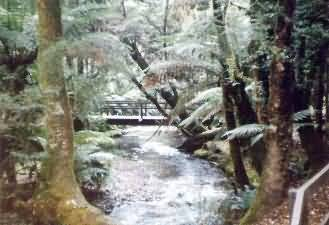

NAVIGATION
TOP of Page
MAIN Page
HOME Page
PREV Page
NEXT Page
NORTH EAST
Beaconsfld to Lilydale
Lilydale to Herrick
Herrick to St Helens
TASMANIAN TOUR
North West
Central North
North East
East Coast
South East
South West
Highlands
West Coast
North Coast
|
From Beaconsfield to Lilydale
Beaconsfield, population 900, near the entrance to the Tamar valley, is the richest gold
mining town in the state. Between 1877 and 1914 the Tasmania mine produced 835,556 ounces until
closure due to flooding. Pumps taking out 36 million litres of water a day were as famous as the
mines. The Grubb Shaft Museum contains history of the mines and the steam and electric
railways serving the area. Head Southeast on the A7 West Tamar Highway towards West Street for
5.8km. Slight left onto Spring Hill Road for 1.5 km. Turn left onto the B73 Batman Highway for
3.8km to cross the spectacular Batman Bridge. Head north-east on B73 Batman Highway towards
Craigburn Road for 5.9km. Turn left onto the A8 East Tamar Highway. Go straight through the
roundabout for 14.3km into Bell Bay.

The Hart Shaft Tower of the Beaconsfield Mine
Bell Bay is an industrial port containing an aluminium smelter and Tasmania's first
thermal power station. Tours of the Aluminium Smelter are available twice daily; be sure to find
the times before arriving at Bell Bay. Vessels up to 55,000 tonnes deliver bauxite to the smelter,
and annually export 120,000 tonnes of aluminium. Continue south down the East Tamar highway and
take the turnoff to Turners Marsh Lower, then head towards Lilydale via Karoola. Head Southeast
on the A8 East Tamar Highway. Continue to follow the A8 and go through one roundabout for 37.2km.
Take the George Town Road exit towards the B81/Rocherlea/Lilydale/ Scottsdale Road for 350m.
Merge onto George Town Road for 1.5km. Turn left onto the B81 Lilydale Road for 18.5km into
Lilydale.

Batman Bridge on the road to Bell Bay
TOP
MAIN
HOME
PREV
NEXT
From Lilydale to Herrick
Lilydale, population 350, sits under Mt Arthur (1,197m) is famous for its Apple Cider.
Local attractions are the two small waterfalls in the reserve 3km north of town. The Oak tree at
the entrance was bought from Windsor Great Park and planted on the coronation day of King George
VI. Head north on the B81 Lilydale Road towards Lalla Road for 12.1km. Turn left onto Pipers
Brook Road for 10.8km into Pipers Brook. Pipers Brook, 2km south of the main road, with
its weather similar to the wine areas of France, is in the states prime wine growing area. The
vineyard produces wines in the European cold climate style. Head Northwest on Pipers Brook Road
towards the B82 Bridport Road for 2.6km. Turn right onto the B82 Bridport Road for 20.9km. Turn
left onto the B82 Emily Street for 700m. Turn left onto the B82 Main Street for 1.4km into
Bridport.
Bridport, population 750, is a resort on the north coast. The local industry is scallops,
with beds in Anderson Bay, and a trout farm to the west of town. The Bridport Seaside Lodge on
Main Street halfway into town is a backpackers motel with cheap and comfortable accommodation.
Head Southeast on the B82 Main Street towards Emma Street for 1.4km. Turn right onto the B82
Emily Street for 700m. Continue straight onto the B82 Bridport Road. Continue to follow the B84
road for 19.4km. Turn right onto the A3 Tasman Highway (signs for Launceston) for 210m into
Scottsdale.

The Furno Navigator Roll On/Roll Off ship in Bridport Docks
Scottsdale, population 1,900, is the main town in the northeast. Local produce includes
sheep, cattle, hops and most of Australia's frozen vegetables from the local processing plant.
Australian Defence has a base here (defended by a rusty Bristol Bloodhound missile in the front
yard!) to supply the food for the military meal packs. Tasmania's largest export crop of poppy
blooms colourfully in the fields from January to February. The township is an interesting source
of bookshops, restaurants and tourist stores. On the western side of town is the The Forest Eco
Centre in an unusual tilted conical building. The closed railway station is also worth a look.
Head Northeast on the A3 Tasman Highway towards Hedley Street for 210m. Turn right to stay on
the A3 Tasman Highway (signs for Derby/St Helens/ Scamander) for 32.5km into Derby.

The unusual Forest Eco Centre in Scottsdale
Nabowla, 13km west of Scottsdale, may be worth a round trip during the four weeks from
Boxing Day, when the flowers in Bridestowe Lavender Farm are in bloom. Ringarooma is on
a southeast detour from the highway. The township has a rundown appearance, but the hotel has
cheap bed and breakfast. Mathinna Hill presents views down the river valley and across
Mt Victoria Forest Reserve. Derby, population 300, was the largest tin mining town in
the area with a 100m high mine face; and was the deepest and largest hydraulic tin mine in the
southern hemisphere. It suffered a disaster on the 4th of April 1929 when torrential rain burst
the Briesis Dam, sweeping 3.5 million tonnes of water through town, killing 14 people.
The mine and town never recovered. Head South on the Tasman Highway towards Charles Street for
9.9km into Herrick.
TOP
MAIN
HOME
PREV
NEXT
From Herrick to St Helens
Herrick is the terminus of the disused Herrick Branch Railway Line. Look for a high water
tank and tracks in an paddock at the edge of town. Head Southeast on the A3 Tasman Highway for
1.6km into Moorina. Moorina, named after Truganinis sister, had an almost totally Chinese
population in the 18809's gold rush days. The Chinese section of the cemetery has an altar with
a conical oven to prepare food for departed relatives. A 264 carat sapphire, the largest in
Tasmania, was found here beside the main road. Head south on the A3 Tasman Highway towards Amos
Road for 10.3km into Weldborough.
Weldborough, now a ramshackle village, was so prosperous in the tin mining 1870's that
it was said the lights never dimmed. The hotel has cheap bed and breakfast. Weldborough
Pass winds through a dense subtropical rainforest of Blackwood, Myrtle and Sassafras.
Head Southeast on the A3 Tasman Highway towards Emu Road for 18.4km. Turn right onto the St
Columba Falls Road (signs for C426/Pyengana) for 1.5km into Pyengana.
Pyengana, just off the highway, is aboriginal for 'land of two rivers' - the North
George and the South George, both of which are populated with trout. The Pub in the
Paddock is famous as the local guest house/restaurant. St Columba Falls (110m) is
up a 12km dirt road heading southwest up the valley to a small carpark, where the walking
track takes you through rainforest with 5 metre tall ferns. Head east on St Columba Falls
Road towards Riverdale Road for 1.5km. Turn right onto the A3 Tasman Highway (signs for St
Helens/St Marys). Continue to follow the A3 road for 25.7km into St Helens.

The Pathway to St Columba Falls
TOP
MAIN
HOME
PREV
NEXT
|